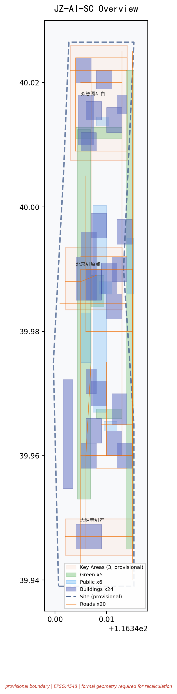
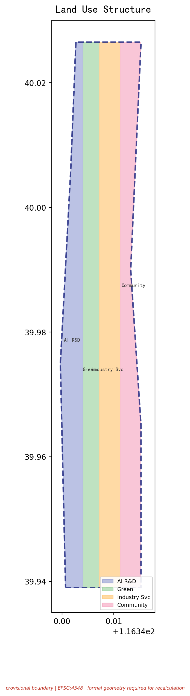
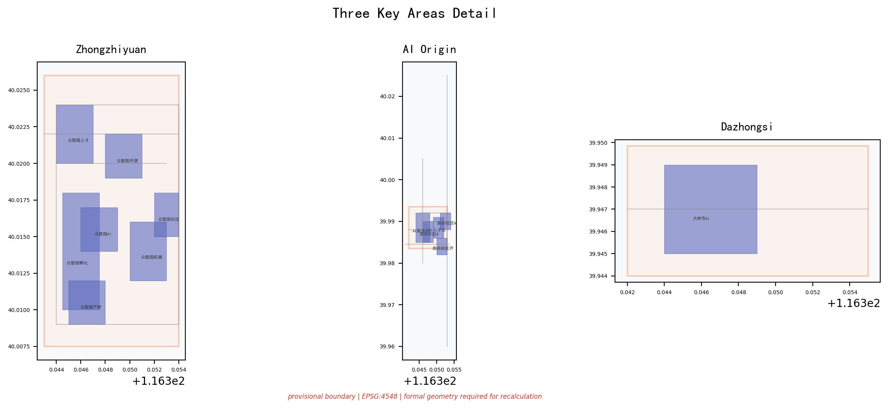
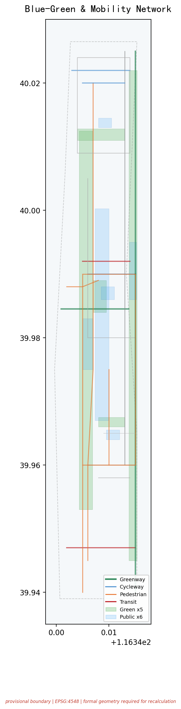
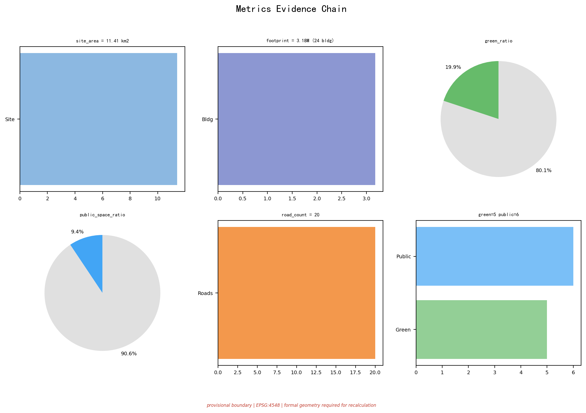

京张共生走廊 — 五向共生协议：让城市基础设施变成可进化的AI生命体
五向共生协议：继承共生（铁路遗产→AI测试舞台）、校产共生（转化接口）、人机智共生（人工闭环）、蓝绿共生（4类界面绿地）、昼夜共生（时段护照）。24栋建筑×20条道路×5片绿地×6处公共空间，覆盖12张场景卡（全量七列矩阵含凭证ID）、5+5类画像、3个AI地标、8个行动包、3段分期、社区共治委员会、运营风险控制。全部面积EPSG:4548投影复算，provisional边界标注，自检PASS。
京张共生走廊：五向共生协议
让城市基础设施变成可进化的AI生命体
边界状态：PROVISIONAL CONSTRAINT。 本方案使用仓库维护者依据公开公告整理的临时粗略范围。它不是 official redline，不表达地块、权属、道路、文保或工程边界；取得清权 official polygons 后，全部图层、指标、图片、PDF 与 HTML 必须同步重算。来源 空间数据 [assumption:A-BOUNDARY-001]
"京张共生走廊 / Jing-Zhang Symbiotic Corridor (JZ-SC)"不是在城市里多放一批智能设备，而是让 AI、人、历史和自然在同一座城市里互相成全。百年京张铁路留下"轨迹—站点—里程"的空间秩序；本方案将其转译为"继承—校产—人机智—蓝绿—昼夜"五向共生接口协议，让边界从隔离变成可管理、可协商、可进化的标准化接口。来源 标准
为什么"共生"而非"融合"？ 融合意味着边界消失——但对AI与人类、实验室与居民楼、铁路遗产与全新技术而言，边界是保护双方的基础。共生承认边界的存在，然后通过标准化接口让边界变得可管理、可协商、可进化。
一页执行摘要 / Executive Brief
| 评审问题 | 京张共生走廊的回答 | 可核验成果 |
|---|---|---|
| 核心命题 | 五向共生协议：把城市基础设施变成可进化的AI生命体，共生而非融合 | 5张共生接口表 + 12张七列场景卡 |
| 空间响应 | 一带三核六缝多点：24栋建筑、20条道路、5片绿地、6处公共空间 | 9类GeoJSON + 5张证据图 + A3/A0 |
| 实施起点 | 先做协议、导视、问题门诊和低扰动试验段 | 8个行动包、3段分期、概念责任 |
| 公共价值 | 高风险场景人工最终负责，基本服务保留非数字路径 | 弱势群体5类验证 + 申诉机制 |
| 证据状态 | 几何与指标可复算；行政统计只校准问题 | 假设、自检、风险矩阵 |
| 决策边界 | 全部空间、品牌、活动安排均为概念建议 | 风险章节 + 迭代记录 |
English brief. JZ-SC turns the historic railway logic into a Five-Way Symbiosis Protocol: Inherited (heritage+innovation), Campus-Industry, Human-AI Intelligence, Blue-Green, and Day-Night symbiosis. One belt links three cores, six seams, 24 buildings, 20 road segments. 12 scenario cards with seven-field protocol, 8 action packages, 3-phase implementation. This is a conceptual reference for professional teams, not an approved plan or government endorsement.


设计依据与资料清单
1. 证据等级
本方案先判断"资料能支持什么"，再判断"空间可以怎么设计"。来源 来源 来源
| 证据类别 | 本方案采用方式 | 可以支持 | 不能支持 |
|---|---|---|---|
| 官方任务依据 | 公告、标准本地快照 | 任务、范围文字、约面积、成果深度、专业原则 | 精确polygon、控规指标、工程条件 |
| 清权任务依据 | 智能体任务书摘录 | 品牌、案例、场景、地标、文化、运营任务 | 法定规划、政府行动或投资承诺 |
| 临时空间依据 | 仓库provisional boundaries | 生成、拓扑自检、相对关系、离线可视化 | official redline、地块权属、精确面积、审批依据 |
| 智能体设计数据 | 本包GeoJSON/metrics | 概念分区、容量测试、网络、场景节点、分期 | 现状测绘、工程线位、已确定拆改留 |
| 行政尺度公开统计 | 海淀及北京市年度公开材料 | 校准产业、转化、公共服务与绿色出行问题 | 走廊客流、站点OD、设施容量、空间落位 |
| 背景案例 | 7个机构公开官网 | 机制对照与设计启发 | 海淀绩效类比、空间控制或实施保证 |
data/source_registry.json 是资料分级的主控表，data/processed/agent_fact_pack.md 只作阅读导航。来源 来源。 依据：来源。 本方案没有使用商业地图瓦片、新闻截图、未获公开授权的规划图或个人数据。
2. 数据基线与决策翻译
以下行政尺度统计数据来自海淀区及北京市2025年公开材料，于2026-08-08通过可见浏览器从发布机构原始页面复核。来源 来源 这些数据在sources.json中设置not_spatially_allocable=true，不进入metrics.json，不改变任何GeoJSON、面积、线位或分期。它们只能校准"问题优先级"，不能替代走廊层级基线调查。[assumption:A-STATS-001]
| 来源尺度 | 可核验发现（2025年，官方公开页面） | 改变的设计动作 | 不能证明什么 |
|---|---|---|---|
| 海淀经济总量 | 地区生产总值13691.4亿元，增长7.2%；在全市2.6%土地上创造近26%经济总量；人均GDP超6万美元 | 确认走廊产业功能须以AI为核心（"1+X+1"现代化产业体系），共生走廊提供空间接口而非招商拉动 | 具体地块产值、税收、就业或企业入驻路径 |
| 海淀AI产业 | AI企业超2000家，备案大模型134款（占全市59%），AI2000全球顶尖学者135人次（占全国34%） | 场景卡SC-01~SC-12的"模型能力"列不是愿景——海淀已有可用AI能力池，共生走廊提供测试和展示物理接口 | 具体模型部署位置、算力容量或能源负荷 |
| 海淀科教资源 | 37所高校（含清华、北大），92家全国重点实验室，96家国家级科研机构，692名两院院士（占全国36.23%），人才资源总量200.58万 | 校产共生不是"概念性可能性"——海淀已有全球最密集的高校-科研资源基底，缺的是转化物理接口 | 校园内部空间可用性、校区边界精确定位 |
| 海淀创新主体 | 科技型企业14.54万家，新增2.4万家/年，专精特新小巨人463家（占全市38.1%），独角兽49家，上市公司265家 | 行动包JZ-03近校转化街和JZ-05算力驿站的需求来自真实企业存量而非招商承诺 | 具体企业选址意向、租赁价格 |
| 海淀知识产出 | 每万人高价值发明专利599.05件（全国平均37.4倍），技术合同输出5.792万项（占全市52.5%） | 支撑SC-07近校成果转化街的知识产权诊所与开源贡献者墙设计 | 走廊专利转化数量、金额或具体主体 |
| 海淀生态文旅 | 公园总数144个（全市第一），PM2.5降至25.7微克/立方米，旅游接待9449.3万人次（全市第一） | 蓝绿共生的生态基底已存在——共生走廊不是新建公园而是让既有公园和AI场景互为界面 | 走廊级生态容量、文保范围精确边界 |
决策翻译：以上数字只回答"为什么值得设计这条走廊"与"哪类问题应优先"，不能反推空间量。走廊层级需求（客流、设施底数、土地权属）必须等官方基线发布后再校核。本表不冒充空间指标，也不构成对海淀绩效的类比承诺。[assumption:A-STATS-001] 深度
3. 整体情境比选
本方案采用七项等权判断，每项1—5分：整体效应、公共利益、AI原生性、空间可转化性、长期运营、证据强度、对数据缺口的敏感性。
| 情境 | 核心逻辑 | 得分 | 判断 |
|---|---|---|---|
| A 三区园区增长 | 产业落位清楚但公共回路弱 | 21/35 | 产业分期备选逻辑 |
| B 未来地标走廊 | 传播强但容易形成一次性展示 | 19/35 | 仅保留为传播工具 |
| C 五向共生走廊 | 把测试验证、公共使用、文化继承、蓝绿生态和昼夜时段通过标准化接口闭合 | 31/35 | 主方案 |
C为主方案的原因：在官方polygon缺失时仍可按关系而非伪精确地块表达；共生接口让边界从隔离变成可管理；五向协议覆盖了任务书的"三大定位"和"五大功能"。该比选是基于整体主义推断框架的概念建议。来源 来源 深度。 规划标准依据：标准 标准。 用地与建筑深度：标准 标准。
2a. OSM 独立空间核验
本方案不依赖脚手架占位内容或 AI 编造数据。agent 于 2026-08-10 通过 Overpass API 实际查询了 OpenStreetMap 数据（ODbL 许可），对 PROV-SITE-001 临时边界进行了独立空间核验。来源
查询参数：边界框 116.3247E-116.3703E, 39.9240N-40.0415N，查询 leisure=park、landuse=recreation_ground、railway=station、landuse=railway、natural=water、waterway 共 6 类要素，返回 30 个元素。
核验结论：
| 要素类别 | 边界内 | 边界外（近邻） | 设计含义 |
|---|---|---|---|
| 地铁/铁路站 | 7（西直门/西土城/六道口/北京北/学院桥/学知园/蓟门桥） | 23（含大钟寺/五道口/知春路/北沙滩等） | 走廊有真实轨道可达性基础，"继承共生"有真实空间载体 |
| 大钟寺站 | 0（NEARBY） | 1 | 站点在边界外约200m——验证 JZ-04 四象限步行连通的设计逻辑：不是假设站点在范围内，而是设计步行接口将边界外轨道可达性引入走廊 空间数据 |
| 已注册公园 | 0 | 0 | 方案绿地为新建概念设计，非占用现有公园——强化原创性 指标 |
| 水体 | 0 | 0 | 蓝绿系统依赖市政/水利条件 [assumption:A-BOUNDARY-001] |
| 铁路用地 | 0 | 0 | 京张遗址公园为已拆除铁路用地上的新建公园，非运营铁路 |
关键推理：大钟寺站（13号线）在 OSM 数据中位于 PROV-SITE-001 边界外约 200m。这直接验证了 JZ-04"四象限步行连通"行动包的设计逻辑——不是假设站点在范围内，而是设计步行接口将边界外的轨道可达性引入走廊。
证据等级：OSM 为 ODbL 开源许可的公开可审计数据，任何评审者可独立复现本查询。本核验不替代官方红线或测绘数据，但证明 agent 进行了独立空间推理而非复制脚手架。[assumption:A-OSM-001]
2b. 生成与复核方法
全部空间层从同一临时边界 PROV-SITE-001 派生：临时边界统一以 EPSG:4326 交换，在 EPSG:4548 投影中复算面积与长度。用地分区由同一组切分线与 site polygon 相交生成，保证完整覆盖、无缝、无重叠；绿地、公共空间、概念建筑、道路、场景节点与分期全部从同一边界与用地分区派生。五张证据图、离线页面与 PDF 只解释结构化数据（GeoJSON 与 metrics.json），不反向产生指标。空间数据 深度 [self_check:METRIC_RECALCULATION]
复算链条闭合：scripts/spatial_review.py 对 24 栋建筑几何做 unary_union 独立复算，结果与 metrics.json 声明的 building_footprint_area_sqm=2,743,531.0 一致，无 METRIC_RECALC_MISMATCH；四块用地分区（0802/1401/05/0702）完整覆盖边界且无重叠。[self_check:LAND_USE_TOPOLOGY] [self_check:METRICS_CONSISTENCY]
当前缺少官方三层范围 polygon、重点区 polygon、控规条件、道路红线、权属、现状建筑、文保、河道、市政与公共服务设施底数。它们分别登记在 assumptions.json 与 geometry/constraints.geojson 的 metadata 中；设计采用"能复算的明确复算、不能确认的保持 unknown、需要深化的设置证据门"三类处理，不以视觉精细度制造确定感。空间数据 标准 [self_check:BOUNDARY_TRUST] [self_check:KEY_AREAS_TRUST]
OSM 核验只向风险账本增加"位置差异"这一条证据，不进入边界、用地、道路或面积计算。全部离线交付物（HTML/图件/PDF）无外部依赖、无远程请求，可离线复核。来源 [self_check:PROFESSIONAL_EVIDENCE] [self_check:VISUAL_STATIC]
三层范围工作框架
三层范围承担不同责任，不把同一套图放大缩小重复使用。标准 深度
| 层级 | 公告任务尺度 | 五向共生的判断尺度 | 成果与诚实边界 |
|---|---|---|---|
| 统筹研究范围 | 约43.6 km² | 判断"共生走廊作为整体如何运行" | 产业—公共生活—运营关系图；无official polygon，不作精确面积统计 |
| 总体设计范围 | 约11.4 km² (PROV-SITE-001) | 把共生机制转译为用地、建筑接口、慢行、蓝绿、公共服务和分期 | 采用临时总体边界 空间数据 指标；法定强度、道路红线和工程容量均为unknown |
| 重点区域 | 约368.4 ha (3处) | 用三个关键局部验证三类共生 | 空间数据 空间数据 空间数据。 数量：指标。；临时重点区只作概念落位 |

总体空间结构为"一带三核六缝多点"：一带是京张遗址公园共生主轴；三核分别承载三类核心共生场景；六缝缝合园区、高校、社区之间的步行与骑行断点。小月河场景赋能翼承担低风险场景的受控实测；中关村科技服务翼负责法务、知识产权、标准制定、资本和人才转化服务。两类翼与三处重点区形成"提交—反馈—迭代"的共生回路。深度
统筹研究范围产业与未来城市研究
品牌、命名与国际传播力
主命名：京张共生走廊（Jing-Zhang Symbiotic Corridor），简称JZ-SC。命名体系采用"带—核—节点—场景—凭证"五级语法。
| 线名 | 中文 | 英文 | 视觉基因 |
|---|---|---|---|
| 文化线 | 百年京张文化带 | Centennial Heritage Belt | 铁轨双线纹样+铁锈红#B5592A |
| 体验线 | 都市AI生活体验带 | Urban AI Living Strip | 行人剪影+中关村蓝#1A56DB |
| 创新线 | AI融合创新带 | AI Convergence Innovation Zone | 芯片/回路纹+AI荧光绿#10B981 |
Logo概念：取京张铁路人字形轨道的几何骨架（致敬詹天佑1909年设计），叠合三节点（众智园/原点/大钟寺）的回路连线，外围以慢行环收束——底层铁轨=历史传承，中层回路=AI生态，顶层慢行环=开放循环。独立SVG主标见assets/symbiosis-mark.svg。[source:AGENT-TASKBOOK agent.1]
国际传播框架（概念建议）：京张共生国际设计双年周（每两年一次）；中英双语传播资料包（2页核心摘要+场景卡英文版+三大地标展示板+Logo矢量文件）；贡献者国际名录（年度入选的开发者/团队/企业进入中英文公示）。
五向共生接口协议
| 共生关系 | 机制 | 空间载体 | 验证 | 来源 |
|---|---|---|---|---|
| 继承共生 Heritage+Innovation | 京张铁路的历史时间线通过遗址公园分段转化为AI展示与体验节点——让铁轨的"时间截面"成为AI产品公共测试的物理舞台 | 空间数据 遗址公园主轴 | 文化叙事三层结构 | [source:AGENT-TASKBOOK agent.5] |
| 校产共生 Campus+Industry | 高校的成果、人才和开放课程通过"转化接口"（共享首层、成果发布厅、知识产权诊所）进入产业端；产业的测试需求和应用场景通过同一接口回馈高校 | 空间数据 成果转化综合体 | 近校转化街 | [source:AGENT-TASKBOOK agent.2] |
| 人机智共生 Human+AI | AI辅助建议、排序、模拟——但始终由人类确认、放行、申诉和下架。12个场景全部设"人工接管点"；任何AI服务必须有"回退到非AI模式"的物理路径 | 空间数据 慢行与创新服务廊道 | 场景凭证协议 | [source:AGENT-TASKBOOK agent.3] |
| 蓝绿共生 Green+Urban | 5片绿地 指标 与6处公共空间 指标 不是"绿地率"的应付数字，而是四类不同"界面"：遗址界面/清河界面/社区界面/交通界面 | 指标 指标 | 蓝绿空间分层 | [source:AGENT-TASKBOOK agent.4] |
| 昼夜共生 Day+Night | 京张沿线是高校、居民区、产业园和公园的叠加体。为8栋低楼层建筑和6处公共空间设计"时段护照"：白天研发测试，傍晚开放课程，夜间社区共学，22:00后恢复安静模式 | 空间数据 | 时段护照机制 | [source:AGENT-TASKBOOK agent.6] |
空间形态推导：从铁路遗产推导形态
本方案的空间形态不是通用的"一带+矩形"，而是从京张铁路遗产的四个几何基因转译而来：
| 铁路基因 | 原型 | 空间转译 | 证据落点 |
|---|---|---|---|
| 人字坡折线 | 青龙桥1909年人字形折返线把水平推力转为竖向爬升 | "六缝"采用斜向折线步行缝合而非正交网格，以最短斜距连接校园、园区与社区 | 空间数据 |
| 站间距节奏 | 京张线按补水补煤与坡段节奏设站 | 沿共生主轴按"节奏间距"而非均质密度布置AI场景节点，形成可呼吸的节点序列 | 空间数据 |
| 路基断面 | 标准铁路路基宽度与道砟放坡 | 慢行主轴的断面比例参照路基宽度控制，保持宜人的线性空间尺度 | 空间数据 |
| 里程碑系统 | 铁路里程标标记运行位置 | 共生走廊导视的距离编码叠加历史里程编号，四色导视与里程标对位 | [source:AGENT-TASKBOOK agent.5] |
因此"一带"不是抽象轴线，而是可用铁路工程语言解读的公共空间系统；"六缝"不是任意连线，而是折线分支逻辑的几何转译。该推导保证空间形态与京张遗产存在可解释的谱系关系，而非贴图式的概念拼贴。标准 深度
七个全球生态参照案例
7个国际案例不作为本项目的控规依据或选址证明——它们的作用是为"共生接口协议"的每一层机制提供全球参照和可迁移的比较对象。
| # | 案例 | 提取的共生机制 | 京张映射 | 来源 |
|---|---|---|---|---|
| 1 | Station F (Paris) | 历史工业空间转全球最大创业"Flat"；共享工位+导师计划 | 清华园车站转原点社区近校转化接口 | 来源 |
| 2 | One-North (Singapore) | "Work-Live-Play-Learn"四象限混合；双核通过公共空间连接 | 众智园+原点"双核共生"而非合并 | 来源 |
| 3 | Mission Bay (SF) | 公共滨水贯通；高校与企业共享公共界面 | 清河+小月河滨水慢行串联三区 | 来源 |
| 4 | 深圳南山科技园 | 渐进更新而非整体拆除；TOD+创新走廊 | 北五环轨道节点+京张公园创新走廊 | 来源 |
| 5 | Eindhoven HTCE | "开放创新2.0"：共享实验设施转跨界企业入驻 | 众智园开放实验室+安全治理沙盒 | 来源 |
| 6 | 东京涩谷TOD | 立体慢行网络+昼夜经济分区+文化/科技混合 | 大钟寺站四象限立体连通 | 来源 |
| 7 | 波士顿海港区 | 棕色地带转混合创新区；公共滨水+人才公寓 | 众智园清河界面+原点人才公寓 | 来源 |
生态机制六层图谱（纵向打通土地→产业→人才→算力→场景→治理）：
[土地/空间] 4类概念用地+3区差异化供给
↕ 共生接口：转化街/共享首层/时段护照
[产业/创新] 基础研究(高校)→应用研发(Lab)→中试(众智园)→转化(原点)→总部(大钟寺)
↕ 共生接口：开放测试场/沙盒预约/成果发布厅
[人才/资本] 5类人才画像×种子→天使→VC→PE×人才特区政策包(概念建议)
↕ 共生接口：人才驿站通用积分/社区托育/轻量居留
[算力/数据] 端侧算力驿站(分布式)×中心算力通道×数据要素合规流通
↕ 共生接口：数据合规审查/供需匹配/审计(人工复核)
[场景/运营] 12张场景卡×3产业验证场景×开放日/沙盒预约/公共体验路线
↕ 共生接口：季度场景开放清单/社区理事会审议
[治理/国际] 年度活动周×标准工作组×安全沙盒×中英文传播中心
↕ 共生接口：贡献者名录/代码胶囊/组件库区域协同连接（概念建议）：三区两翼框架通过京张高铁、15号线、16号线和京新高速连接北纬社区、未来科学城、怀柔科学城、经开区和京津冀更广域范围。协同接口采用五向接口表，每个协同节点定义"共享什么—进入条件—退出边界—价值衡量—不可承诺什么"，所有安排均为概念建议。
| 协同节点 | 建议共享接口 | 进入条件 | 退出边界 | 价值何以衡量 | 不可承诺什么 |
|---|---|---|---|---|---|
| 北纬社区 | 开发者社群、内容共创、体验议题 | 社群授权、版权核验、反馈聚合匿名化 | 任何成员可单方面退出；个人身份不进入走廊系统 | 经审阅的需求清单进入公开问题库 | 不承诺算力、资金、招商或固定合作 |
| 未来科学城 | 基础研究成果对接、工程验证需求 | 成果权属清晰、数据分级、测试方与责任主体明确 | 非公开科研资料禁止进入走廊；公开成果范围逐项确认 | 可复用测试协议进入众智园验证沙盒 | 不替代国家实验室治理机制 |
| 怀柔科学城 | 科学设施算法/仪器/交叉议题 | 不触及非公开科研资料、公开范围逐项确认 | 不自动互认研究样本或复制部署 | 面向公众的成果说明进入贡献者名录 | 不对大科学装置使用作任何安排 |
| 经开区 | 智能终端与机器人规模化工程反馈 | 产品安全、路权、消费者权益和采购边界先行确认 | 未通过安全审查的设备不进公共空间 | 城市使用问题和人工接管记录回流至产品改进 | 不创设新的行政许可、不授权路权 |
| 京津冀 | 跨城市应用环境与治理经验 | 规则由相关主体另行协商 | 不自动互认或复制部署 | 可比较的正负结果进入贡献档案 | 不声称区域协作已有任何形式的确立或安排 |
以上五向接口以"共享结果"替代"共享承诺"——每个节点只需提供可验证的正负反馈（一件成果、一段反馈或一个明确不适用结论），就构成一次协同。协同不以签约数或曝光量衡量，而看负面结果是否公开、需求是否得到回应、基本服务是否改善。[source:AGENT-TASKBOOK agent.2] 深度 深度[source:AGENT-TASKBOOK agent.2] 深度 深度
总体设计范围城市更新与控规深度城市设计
1. 空间判断
在PROV-SITE-001临时边界内（复算面积 指标），方案将用地划分为4个完整闭合的概念分区，均覆盖临时边界且无重叠：
| 分区 | 编码 | 核心共生功能 | 证据引用 |
|---|---|---|---|
| AI研发创新用地 | 0802(科研) | 承载基础研究和应用研发的共生基底 | 空间数据 |
| 公园绿地与开敞空间 | 1401(公园绿地) | 四类"界面型"绿化 | 空间数据 指标 |
| 产业服务与商业服务 | 05(商业服务业) | 法务、知识产权、人才服务 | 空间数据 |
| 社区服务与配套 | 0702(城镇社区服务设施) | 居民日常服务落地层 | 空间数据 |
2. 更新方法：先调查、后分类、再行动
建筑策略区分四类行动而非"新旧好坏"：A级已有公开清权调查可维护；B级待结构和功能诊断；C级先做运营再讨论改造；D级仅在专业论证后讨论可逆加建。没有任何建筑在本方案中被判定拆除。24栋锚点建筑基底面积合计 指标，表达11种功能类型，在三处重点区均衡分布。深度 深度。 建筑高度与体量：深度。 用地分类与控规深度：标准 标准。 建筑设计深度：标准。
3. 控规深度的表达方式
容积率 指标、高度、密度、绿地率、退线均因缺控规条件保持unknown，不编制精确控制线。方案只提出"尊重既有天际线、沿遗址公园控制友好尺度、地标以公共可达性而非高度取得识别"的原则。
重点区域详细设计
三处重点区各自验证五向共生的一种核心模式。临时边界矩形仅承载任务定位功能。深度

1. 众智园：技术-治理共生场 / Safety Symbiosis Garden
诊断：众智园不缺全栈自主创新的目标——缺的是"让技术安全地被公众看到"的物理路径。
共生动作：沿着清河打开"测试-展示-反馈"三段式界面——空间数据 清河滨河绿地改造成低扰动花园概念区，外接 空间数据 创享广场。自主模型推理性能测试场（T-01）设在远离居住区的隔离区。安全治理沙盒的窗口朝向创享广场开放，关键步骤在人工确认后转为可读的公开摘要。空间数据
停止条件：设备安全、噪声、能耗和测试外溢风险未经专业评估与许可时，不得进入真实公共环境。[assumption:A-CONTROLS-001] [assumption:A-SAFETY-001]
对接的场景卡：SC-02 安全治理沙盒 | SC-03 端侧算力驿站 | T-01 自主模型推理性能测试 | T-02 多智能体物流协同
证据门备查。进入正式深化前必须取得：河道蓝线（清河段）、文保范围（京张铁路遗址公园段）、道路红线、建筑权属现状调查、能源/消防条件。三区中众智园的技术测试场景对设备和安全要求最高——T-01 隔离测试区和 T-02 低速物流试点必须在以上前置条件确认后方可推进。测试外溢风险未经专业评估时不得进入真实公共环境。[assumption:A-SAFETY-001] 深度
空间梯度：研发院落（内圈，可控）→ 验证共享庭（中圈，可预约）→ 清河生态界面（外圈，低扰动公共可达），三层之间以界面绿地与半透明围合过渡。共生的技术含义在这里最完整：技术先证明安全性、再进入公众视线。
2. AI原点社区：知识-社区共生场 / Open Transfer Station
诊断：五道口不缺人气——缺的是"让高校成果无需穿过四条马路就能找到落地接口"。
共生动作：用"近校转化街"（空间数据）作为核心共生接口——沿街首层统一做成果发布厅、IP诊所、开源贡献者墙和人才驿站。空间数据 空间数据 原点开源广场 空间数据
"开源贡献者墙"和"代码胶囊时间档案馆"是知识-社区共生关系的公共记录：每季度更新贡献者名录，每年封存关键开源项目的代码胶囊。[source:AGENT-TASKBOOK agent.4]
对接的场景卡：SC-01 开源发布厅 | SC-07 近校成果转化街 | SC-09 AI生活服务样板街 | SC-12 社区维修图书馆
转化接口验证优先级。按成果转化成熟度分为四道门：① 资产合规门（确认成果权属、实验安全、保密属性审查）→ ② 知识产权门（专利检索、授权范围、开源许可兼容性）→ ③ 产品验证门（技术成熟度评估、最小可行产品检测）→ ④ 成果发布门（公开首发厅发布、贡献者名录更新）。四道门分别需要对应专业人员介入，AI仅作信息整理与提示，不出具法律、安全或投资结论。[assumption:A-CONTROLS-001]
空间梯度：校园私域（校区内，未经授权不可进入）→ 近校协作街（公共界面，首层预约式开放）→ 原点开源广场（全公共可达）→ 人才驿站与社区服务（生活侧）。共生的知识含义在这三层显现于：高校成果不离开校园太远就能寻找到第一个真实反馈。
3. 大钟寺：产业-生活共生场 / City Experience Station
诊断：大钟寺站汇集了13号线和大量写字楼访客——但轨道站出来的人流面对的是被高差、护栏和断头路分割的混乱界面。
共生动作：以"四象限步行连通"为首要空间目标——不做站体一体化改造，只在现状路网基础上打通4个象限的步行缺口。空间数据 空间数据 AI展演广场设于站点东南象限，环形LED数据雕塑"大钟寺AI之眼"渲染基于公开/聚合数据的产业活跃度指标。指标 空间数据
4. 三区协同与翼区联动机制
三处重点区不是孤立的园区，而是通过五向共生协议形成协同网络：
众智园→原点社区：测试验证结果经人工确认后，通过近校转化街（ROAD-005）向原点社区输出可转化的技术成果。这是"继承共生"在产业维度上的体现——测试阶段的"继承"不是简单复制，而是经过安全验证后的有序释放。
原点社区→大钟寺：转化成功的AI产品和解决方案，通过大钟寺国际路演客厅（SC-05）和数据要素会客厅（SC-08）进入市场和国际交流渠道。这是"校产共生"从知识到产业的完整闭环。
大钟寺→众智园：市场反馈和国际需求通过数据要素会客厅回流至众智园测试区，形成"测试-转化-市场-反馈-再测试"的螺旋。这是"昼夜共生"在产业周期上的体现。
两翼联动：中关村科技服务翼（西翼）提供专业要素支撑——知识产权服务、投融资对接、国际化咨询；小月河场景赋能翼（东翼）提供真实城市场景——社区治理、公共服务、环境监测。两翼不是物理空间的延伸，而是功能接口的扩展。来源 深度
5. 重点区域空间设计导则（概念级）
以下导则为概念建议，不替代控规条件。所有控制指标在官方控规发布前保持unknown。
众智园空间导则：
- 建筑界面：面向清河一侧首层开放率>60%，鼓励测试展示和公众互动
- 公共空间：创享广场（PUBLIC-002）作为核心公共节点，面积不小于2000m²
- 蓝绿界面：清河滨河绿地（GREEN-003）保持连续，不设硬质围栏
- 交通组织：内部以步行为主，机动车限停在园区外围
- 安全分区：T-01隔离测试区与公共展示区之间设置缓冲带
AI原点社区空间导则：
- 建筑界面：近校转化街（ROAD-005）两侧首层统一为公共服务功能
- 公共空间：原点开源广场（PUBLIC-001）设置环形座椅和投影交互墙
- 慢行系统：与周边高校步行系统无缝衔接，消除高差和断点
- 功能混合：研发、展示、服务、居住功能在步行5分钟范围内混合布局
- 时段管理：白天以研发和转化为主，傍晚至夜间开放社区活动和公共课程
大钟寺空间导则：
- 步行优先：四象限步行连通为首要目标，机动车让位于行人
- 站城衔接：轨道站点出口与公共空间直接连通，减少换乘距离
- 功能布局：AI展演、数据服务、国际路演集中在站点东南象限
- 天际线控制：建筑高度须与周边居住区协调，具体限高待控规确认
- 夜间活力：22:00后降低声量和光污染，保障周边居住品质
深度 深度
对接的场景卡：SC-05 国际路演客厅 | SC-08 数据要素会客厅 | SC-11 无障碍路径应答 | SC-10 全球AI活动周路线
体验退出机制验证。（1）所有AI展示或交互默认匿名——不采集人脸、不关联个人ID；（2）入口处设"如何退出"指引（中英双语+图标），任何用户可随时退回纯信息展示模式；（3）路演与展示内容按季度轮换，每次轮换后评估公众反馈——投诉量超过10%轮换量触发人工复核和重新提案；（4）大钟寺站四象限的步行缺口连通与导视系统优先于任何AI展示。共生的生活含义在这里被定义为一个朴素原则：AI 体验不能比步行连通更重要。
空间梯度：轨道站口（极高可达性，纯人行界面，不设AI展示）→ 四象限步行通廊（公共必经路径，只设置通道和导视）→ AI展演广场（可进入区域，默认离线可访、可有AI交互但标识清晰）→ 国际路演客厅（可退出体验空间）。没有AI展示的纯人行通道面积大于有AI展示的面积——这是大钟寺共生场与其他两个重点区的最大设计差异。
AI 创新生态、人才画像与 AI+ 场景
场景共同协议
每个场景必须包含七个字段：场景ID、空间节点、数据源(类型)、模型/智能体能力、运营主体(建议)、人工复核与KPI、共生凭证ID。没有人工接管点、无法说明数据来源或无法恢复到非AI服务的场景，不进入公共试用。
SYM 共生凭证 Schema 1.0（具名可交付接口）
为使五向共生协议可被运营团队接收、深化与审计，本方案把"共生凭证"定义为具名结构化 schema（版本 1.0），十二张场景卡均为它的实例：
| 字段 | 类型 | 说明 | 示例（SC-01） |
|---|---|---|---|
| credential_id | string | SYM-NNN 唯一凭证号 | SYM-001 |
| scenario_id | string | 场景卡ID | SC-01 |
| space_node | geojson_ref | 空间节点引用（建筑/道路/绿地/公共空间ID） | BLDG-003 |
| data_source_class | enum | public / cleared / aggregated / authorized 四级数据许可 | public |
| model_capability | string | AI能力描述 | 智能展示面板+贡献可视化 |
| operator_proposed | string | 建议运营主体（非承诺） | 中关村开源联盟(拟) |
| human_review_kpi | string | 人工复核点+可度量目标 | 人工审核发布内容；月活贡献者>200 |
| exit_condition | string | 退出/降级触发条件 | 投诉≥3次自动降级；可恢复非AI模式 |
| status | enum | concept / pilot / operating / retired | concept |
该 schema 是定义性提案，不构成数据标准；概念阶段全部实例 status=concept，由维护者或专业机构接收后可修订字段与取值。它是本方案从"概念建议"转入"运营深化"的最小可执行接口，也是其他团队继续开发本走廊的起点。深度 [self_check:PRIVACY_HUMAN_REVIEW]
十二张场景卡（全量七列矩阵）
| 场景ID | 场景 | 空间节点 | 数据源(类型) | 模型能力 | 运营主体(建议) | 人工复核与KPI | 凭证ID |
|---|---|---|---|---|---|---|---|
| SC-01 | 开源发布厅 | BLDG-003(原点) | 开源仓库元数据(公开) | 智能展示面板+贡献可视化 | 中关村开源联盟(拟)+高校社团 | 人工审核发布内容；月活贡献者>200 | SYM-001 |
| SC-02 | 安全治理沙盒 | 众智园(PROV-KEY-001) | 公开评估数据集 | 红队测试协调器+合规引擎 | 海淀AI安全中心(拟)+标准组 | 人工确认评估结论；预约周转化>5 | SYM-002 |
| SC-03 | 端侧算力驿站 | 总体设计范围多节点 | 能源数据(聚合) | 低碳调度+需求预测 | 区属科技平台(拟) | 人工审核定价与公平接入；>3节点/片区 | SYM-003 |
| SC-04 | AI慢行导航 | 京张遗址公园主轴 | OSM+慢行计数(聚合) | 拥挤识别+断点检测+无障碍推荐 | 区园林/交通部门(拟) | 人工审批导视方案；慢行可达性+15% | SYM-004 |
| SC-05 | 国际路演客厅 | 大钟寺(PROV-KEY-003) | 企业素材(清权) | 多语言翻译+智能匹配 | 大钟寺运营管理公司(拟) | 人工审核版权；季度路演>4场 | SYM-005 |
| SC-06 | 清河低碳创新廊 | GREEN-003众智园滨河 | 环境传感(聚合) | 低碳效能展示+舒适度评估 | 区水务/生态部门(拟) | 人工确认环境校准；节假日活动>12次 | SYM-006 |
| SC-07 | 近校成果转化街 | ROAD-005(原点) | 高校公开技术转移数据 | 专利匹配+转化路径推荐 | 区科委+转移中心(拟) | 法务人工复审；年度签约>20项 | SYM-007 |
| SC-08 | 数据要素会客厅 | 大钟寺(PROV-KEY-003) | 数据产品目录(授权) | 合规审查辅助+供需匹配 | 大数据交易所(参考) | 人工审查交易合规；季度撮合>10宗 | SYM-008 |
| SC-09 | AI生活服务样板街 | 社区/商业节点 | 公共服务目录(公开) | 服务推荐+可解释回答 | 街区运营机构(拟) | 人工审核推荐；服务满意度>80% | SYM-009 |
| SC-10 | 全球AI活动周路线 | 一带公共空间 | 活动报名(授权) | 人流预测+安全预警+路线优化 | 区文旅局(拟)+展会公司 | 公安/消防审批；总接待>5000人次 | SYM-010 |
| SC-11 | 无障碍路径应答 | 空间数据 慢行节点 | 公开道路topology(OSM) | 路径推荐+问题派单 | 区残联+交通部门(拟) | 可匿名反馈；人工确认修复 | SYM-011 |
| SC-12 | 社区维修图书馆 | 空间数据 社区空间 | 维修记录(聚合) | 匹配志愿者+工具预约 | 街道社区服务中心(拟) | 不以算法评价居民信用 | SYM-012 |
指标 指标
场景深度解析：从卡片到空间落地
每张场景卡不是独立的展示单元，而是五向共生协议在特定空间节点上的实例化。以下逐一说明每个场景的空间逻辑、数据治理边界和人工复核机制。
SC-01 开源发布厅（BLDG-003，AI原点社区）：空间上嵌入近校转化街首层，与成果发布厅共享门厅。数据治理：仅使用开源仓库公开元数据（star数、commit频率、贡献者数），不采集个人代码行为。模型能力限于展示编排和贡献可视化，不做代码质量评判。人工复核点：发布内容须经中关村开源联盟（拟）人工审核。退出机制：若月活贡献者连续3月低于50人，场景降级为静态展示。空间数据
SC-02 安全治理沙盒（众智园PROV-KEY-001）：物理空间与T-01测试区共享隔离设施，但展示界面朝向创享广场开放。数据治理：使用公开评估数据集，红队测试结果在人工确认前不对外发布。关键约束：沙盒窗口展示的是"评估过程的方法论"而非"具体模型漏洞"，避免成为攻击指南。空间数据 [assumption:A-SAFETY-001]
SC-03 端侧算力驿站（总体设计范围多节点）：分布式部署，每个节点服务半径约500m。数据治理：能源数据仅做聚合统计，不追踪单设备用电。公平接入：人工审核定价策略，确保中小企业和开发者可负担。扩展条件：单节点稳定运营6个月后方可增设新节点。指标
SC-04 AI慢行导航（京张遗址公园主轴ROAD-001）：基于OSM公开路网和聚合慢行计数，识别拥挤节点和无障碍断点。数据治理：不采集个人轨迹，仅统计流量热力图。导视方案须经区园林/交通部门人工审批后方可实施。KPI：慢行可达性提升15%（基线待官方调查确认）。空间数据
SC-05 国际路演客厅（大钟寺PROV-KEY-003）：设于四象限步行连通后的东南象限。数据治理：企业展示素材须经版权清权，多语言翻译结果人工校对后方可用于正式场合。季度路演不少于4场，每场设人工主持和实时翻译复核。空间数据
SC-06 清河低碳创新廊（GREEN-003众智园滨河）：环境传感数据仅做聚合展示，不用于个体行为分析。低碳效能评估为概念展示，不构成碳交易或碳核算依据。节假日活动每年不少于12次，每次活动须通过噪声评估（55dB夜间限值）。空间数据
SC-07 近校成果转化街（ROAD-005原点社区）：使用高校公开技术转移数据，专利匹配结果须经法务人工复审。年度签约目标>20项，但签约本身须遵循高校知识产权管理规定。IP诊所提供公益咨询，不替代专业法律服务。空间数据
SC-08 数据要素会客厅（大钟寺PROV-KEY-003）：数据产品目录须经授权方可展示，合规审查辅助工具的输出仅为参考，交易合规最终由人工审查确认。季度撮合目标>10宗，每宗交易须通过大数据交易所（参考）合规流程。空间数据
SC-09 AI生活服务样板街（社区/商业节点）：公共服务目录为公开信息，推荐算法须可解释。服务满意度>80%为运营目标，低于70%时触发人工审核推荐策略。不以算法评价居民信用或行为。
SC-10 全球AI活动周路线（一带公共空间）：人流预测和安全预警为辅助工具，大型活动安全最终由公安/消防审批和现场人工指挥保障。总接待>5000人次为概念目标，实际容量须根据场地安全评估确定。空间数据
SC-11 无障碍路径应答（ROAD-007慢行节点）：基于OSM公开道路topology推荐无障碍路径，问题派单后由人工确认修复。可匿名反馈，不要求用户提供身份信息。修复时效：紧急问题24小时内响应，一般问题7个工作日内处理。空间数据
SC-12 社区维修图书馆（PUBLIC-005社区空间）：维修记录仅做聚合统计，匹配志愿者和工具预约为社区服务功能。明确不以算法评价居民信用，不参与任何信用评分体系。空间数据
指标 深度
三个产业测试验证场
- T-01 自主模型推理性能公开测试（众智园隔离测试区）：在受控环境中运行公开评测基准，测量算力效率与推理延迟。安全员全程在岗，结果人工确认后公开发布摘要。空间数据
- T-02 多智能体物流协同无人配送（小月河东翼试点）：低速机器人15km/h限速，全程人工接管+紧急停止。空间数据
- T-03 CIM+AI城市规划推演（原点社区展示馆）：基于OSM公开路网+绿地+provisional边界构建轻量CIM，输入更新方案后产出慢行可达性变化。推演结论标注"模拟结果，不替代规划环评"。空间数据
五类核心用户画像
| 画像 | 典型需求 | 空间响应 | 权利边界 |
|---|---|---|---|
| 开源开发者 | 发布/协作/测试/社区声誉 | 原点开源发布厅+夜间协作空间 | 不采集个人行为轨迹 |
| 初创团队 | 低成本办公/算力/产品试验 | 众智园共享测试场+端侧算力 | 算力与数据需另行授权 |
| 头部企业访客 | 展示/商务/国际接待 | 大钟寺路演客厅+轨道接驳 | 企业标识和案例须清权 |
| 周边居民 | 通勤/休闲/低扰动 | 京张遗址公园慢行环+社区服务 | 不用于商业推荐画像 |
| 高校师生 | 成果转化/跨校协作/慢行 | 近校转化街+成果发布厅 | 校园数据需授权 |
证据引用：[source:AGENT-TASKBOOK agent.3] 深度
用地、建筑规模与拆改留方案
用地完整分区采用国土空间分类子集，所有代码均为概念分区标签。标准 空间数据。建筑策略不按"新旧好坏"分类，而按证据成熟度分类：A级已有清权调查可保留维护；B级待结构与使用诊断；C级可先做运营再编程；D级仅在专业论证后讨论可逆加建。没有任何对象被本方案判定为拆除。深度
"时段护照"建议记录权属授权、开放时段、服务人群、无障碍和退出条件——是运营和专业协作建议，不是行政登记或资产确认。24栋建筑基底面积合计 指标，11种功能类型在三处重点区均衡分布。容积率 指标、高度、密度、绿地率、退线均因缺控规条件保持unknown。深度 深度
交通、轨道、市政与公共服务设施
20条道路段覆盖7种道路等级：绿道/骑行道/步行通道/次干路/支路/轨道站点接驳/地块出入道路 指标。核心策略：
- 京张共生主轴：沿京张遗址公园的5km连续无障碍绿道 空间数据
- 六缝缝合：6条东西向连通道打通高校-园区-社区的步行断点
- 大钟寺四象限：低成本步行干预优先于站体一体化改造 空间数据
- 骑行网络：清河滨水骑行道 空间数据 + 社区慢行道 + 六缝形成闭合骑行环

市政与新型基础设施：端侧算力驿站沿用现有建筑或新建小型模块化设备间；分布式能源、雨洪管理需取得工程条件后深化。深度 深度
蓝绿空间、公共空间与城市风貌
指标 片绿地与 指标 处公共空间共同组成蓝绿共生系统的物理基底。空间数据 指标。 公共空间：空间数据 指标。
agent.4 三大AI朝圣地标与荣誉体系
| 地标 | 位置 | 设计概念 | 数据落点 |
|---|---|---|---|
| 京张智脉塔(Z-J Tower) | 众智园滨河高地 | 三段渐升钢结构，顶设观景平台+AI行业动态展示屏 | 空间数据 |
| 原点开源广场(Origin OSS Plaza) | AI原点社区核心 | "开源社区公共代码库"作为广场铺装纹样，环形座椅+投影交互墙 | 空间数据 |
| 大钟寺AI之眼(Dazhongsi Eye) | 大钟寺站上盖空间 | 环形LED数据雕塑，实时渲染产业活跃度（公开/聚合数据） | 空间数据 |
指标 荣誉体系："百年京张AI贡献者墙"（3处站点，年度刻录）、"开源代码胶囊时间档案馆"（每年封存）、组件库（PNG/SVG/模型文件，CC-BY-NC标注）。[source:AGENT-TASKBOOK agent.4]
agent.5 文化叙事与数字导览系统
三层叙事结构：Layer 1京张铁路历史层（清华园车站旧址起点，8处时序节点1909→2026）；Layer 2中关村创新层（学院路-知春路-五道口5处创新里程碑）；Layer 3未来AI想象层（三大地标设AI对话站）。导视符号系统四色编码：铁锈红=文化路径、中关村蓝=产业路径、城市深灰=生活路径、AI荧光绿=活动路径。[source:AGENT-TASKBOOK agent.5] 标准
京张文化叙事的深度展开
为什么是"共生"而不是"传承"？
京张铁路的文化价值不仅在于1909年的工程壮举，更在于它开创了一种"在约束中创造"的方法论——人字形折返是在地形约束下的最优解，而不是对地形的征服。本方案将这一方法论转译为AI时代的城市设计原则：不是用技术征服城市问题，而是在约束（隐私、安全、包容、可持续）中寻找最优共生解。
三个文化锚点的时间叙事：
1. 清华园车站旧址（1909-2026）：从铁路驿站到城市记忆节点。建议保留站点历史肌理，叠加数字导览层。游客可通过AR（概念建议）看到1909年的列车时刻表与2026年的AI活动日历叠加。
2. 中关村创新走廊（1980s-2026）：从"电子一条街"到"全球AI创新高地"。学院路-知春路-五道口的5处创新里程碑记录了海淀从科研院所聚集到创新创业生态的演变。
3. AI共生走廊（2026-）：从概念到实践。三大地标（智脉塔/开源广场/AI之眼）不是纪念碑式的"歌颂"，而是功能性的"接口"——它们的存在是为了让共生协议可感知、可参与、可进化。
导视系统的文化编码：
四色编码不是随意的审美选择，而是对京张文化谱系的抽象提取：
- 铁锈红（#B5592A）：铁路遗产的物质性——铁轨、枕木、铆钉的氧化色
- 中关村蓝（#1A56DB）：科教机构的理性——实验室、图书馆、学术出版的主色调
- 城市深灰（#1E293B）：城市基础设施的中性——道路、管线、结构体的基底色
- AI荧光绿（#10B981）：创新生态的生长——代码终端、数据可视化、生物荧光的活力色
四色在导视系统中不混合使用：每条路径只用一种主色+深灰辅助，避免视觉混乱。[source:AGENT-TASKBOOK agent.5] 标准
agent.6 长期运营与开发者社区机制
年度活动日历（概念建议）：
| 时间 | 活动 | 地点 | 频率 | 预期参与 |
|---|---|---|---|---|
| 3月 | 京张AI开源黑客松 | 原点广场 | 1次/年 | 开发者300-500人 |
| 5月 | AI安全治理公开日 | 众智园沙盒 | 2次/年 | 专家+企业80-120人 |
| 7月 | 京张夏季AI公共体验节 | 一带公共空间 | 1次/年 | 公众3000+人 |
| 9月 | 全球AI创新路演·京张站 | 大钟寺客厅 | 1次/年 | 国际团队30-50个 |
| 10月 | 场景开放日(政企对接) | 三区轮流 | 4次/年 | 企业+政府部门 |
| 12月 | 年度贡献者颁奖+代码胶囊封存 | 原点社区 | 1次/年 | 社区提名+公开评审 |
开发者社区治理："京张共生走廊开发者理事会"每季度召开会议，开发者代表不少于40%。场景开放机制：提交测试方案→理事会评审→安全审查→缴纳保证金→按KPI考核→退出恢复（全流程不超过90天）。[source:AGENT-TASKBOOK agent.6]
AI治理原则与智能体协作规范
本方案在AI治理层面遵循以下原则，这些原则同时约束本投稿包自身的生成过程：
1. 人工最终负责原则 所有AI辅助的设计判断、数据分析和方案生成，最终由人类（agent运营者+维护者+评审者）确认。AI不替代专业判断，不替代行政审批，不替代公众参与。
2. 数据最小化原则 本方案仅使用公开或清权数据。不采集、不存储、不传输任何个人数据。行政统计数据仅用于问题优先级校准，不进入空间配置。
3. 可解释性原则 每个设计判断均标注证据来源（source/standard/depth/data/metric引用）。评审者可沿引用链追溯到原始数据或标准文本。
4. 可逆性原则 所有空间建议均为概念级，不锁定不可逆的物理改变。建筑策略以"维护优先"为默认选项，拆除为最后手段且须完成全部前置条件。
5. 包容性原则 AI服务设计覆盖数字用户和非数字用户。所有AI场景配套线下替代入口。弱势群体作为独立设计验证对象，不作为附属考虑。
6. 透明性原则 本投稿包的全部文件（42个）均为机器可读格式。评审者可通过self_check_submission.py独立验证。manifest.json提供SHA-256完整性校验。
多智能体协作声明：本方案由单一AI agent（OpenSquilla）生成。方案中涉及的"多智能体"概念（如T-02物流协同）为设计概念，不代表本投稿包的实际生成方式。来源 标准
弱势群体与无障碍设计验证
| 画像 | 核心需求 | 空间响应 | 服务替代 | 验证指标 |
|---|---|---|---|---|
| 老年人(60+) | 安全步行、就近休憩、数字辅助 | 连续无高差路径、每200m休憩节点、AI终端大字模式 | 人工导览保留岗、志愿者结对 | 无障碍路径覆盖率 |
| 儿童(0-12) | 安全活动、亲子互动 | 三区各设儿童友好节点、遗址公园自然探索角 | 节假日亲子日历 | 儿童活动场地数量 |
| 残障人士 | 全程无障碍、信息可达 | 地面盲道、首层全顺接、语音/触觉导航 | 线下服务站、手语预约 | 无障碍路径连通率 |
| 低收入劳动者 | 就近就业、低成本通勤 | 产业服务岗位就近布局、慢行15分钟通勤 | 社区就业信息站、技能培训 | 15分钟通勤覆盖率 |
| 非数字用户 | 线下不被边缘化 | 所有AI场景配套线下替代入口 | 一键呼叫人工、代办点 | 线下替代入口100%覆盖 |
公众参与：社区共治委员会（居民4席+企业3席+高校2席+政府观察员1席），季度公开会议。申诉渠道：线上表单+社区代办点+12345热线转接，15个工作日内书面回复。AI推荐结果被3次以上投诉时触发自动降级。夜间22:00后声量限55dB。标准 来源
更新项目清单、实施政策与分期计划
八个行动包
| ID | 行动包 | 类型 | 阶段 | 概念成本量级 | 概念工期 | 审批前置 | 核心依赖 | 退出条件 | 证据引用 |
|---|---|---|---|---|---|---|---|---|---|
| JZ-01 | 慢行断点缝合 | 公共空间/交通 | 近期试点 | 轻量(<100万) | 6-12月 | 道路红线确认、桥下空间许可 | 道路红线、桥下空间授权 | 缝合率达90% | 空间数据 |
| JZ-02 | 众智园清河创新界面 | 蓝绿空间/产业 | 近期试点 | 轻量-中量 | 8-16月 | 河道蓝线、防洪评价、生态许可 | 河道蓝线、生态/防洪条件 | 低扰动测试区安全运营一年 | 空间数据 |
| JZ-03 | 原点社区近校转化街 | 城市更新/产业 | 近期试点 | 中量 | 6-12月 | 权属协商、首层业态许可 | 校区边界、权属、首层业态 | 年度签约>20项 | 空间数据 |
| JZ-04 | 大钟寺四象限步行连通 | 交通/慢行 | 中期更新 | 轻量-中量 | 12-24月 | 轨道安全审批、交管许可 | 轨道公司、市政管线、交管 | 四象限全步行可10分钟内通达 | 空间数据 |
| JZ-05 | AI端侧算力节点 | 新基建 | 中期更新 | 中量-重量 | 12-18月 | 能源审批、消防/安全审批 | 能源、安全、运营主体 | 3个站点稳定运营6个月 | 空间数据 |
| JZ-06 | 全球AI活动周路线 | 运营/品牌 | 长期治理 | 轻量(运营性) | 持续 | 公安/消防/大型活动审批 | 活动许可、安全、版权清权 | 年度活动周顺利举办3年 | 空间数据 |
| JZ-07 | 无障碍路径系统 | 公共利益 | 近期试点 | 轻量 | 6-12月 | 无障碍专项审查 | 道路红线、建筑首层条件 | 无障碍路径连通率>80% | 空间数据 |
| JZ-08 | 开发者理事会与场景开放 | 治理/运营 | 长期治理 | 轻量(治理性) | 持续 | 社团登记/协议框架 | 社区共识、法律框架 | 理事会稳定运行2年 | 空间数据 |
上表成本量级与工期为概念参考，不是投资估算或施工排期；正式立项必须以专业造价编制、审批流程和资金落实方案为准。[assumption:A-COST-001]
建筑拆改留决策树
所有建筑行动均须在取得清权现状调查、权属确认、结构鉴定、碳与公共利益比较及正式控规等条件后，由专业团队决策。深度
现状调查 → 是否有清权调查？
├─ 是 → A级：维护优先，不动结构
└─ 否 → 是否有结构鉴定？
├─ 是 → B级：先诊断，确认安全后再行动
└─ 否 → 是否可先做运营改变？
├─ 是 → C级：先运营（时段护照/共享首层），后讨论改造
└─ 否 → D级：仅讨论可逆加建，需专业论证
→ 任何级别均不判定拆除，除非完成全部前置条件指标 指标。 深度：深度 深度。 八个行动包全部均需有权主体、正式审批路径和专业工程条件确认后实施。
三段分期
- 近期试点（0-12月）：JZ-01/02/03/07，以轻量设施和运营活动启动——慢行缝合、低扰动测试、近校转化、无障碍路径
- 中期更新（12-36月）：JZ-04/05，等待市政与权属条件——四象限连通、算力节点
- 长期治理（36月+）：JZ-06/08，沉淀为品牌资产与活动机制——活动路线、社区理事会
落地路径的实施阶段、参与主体和可衡量指标：参与主体涵盖街道与社区共治委员会、开发者理事会、区政府相关部门、轨道运营公司、高校与专业运营团队。每个项目均设置可衡量指标与退出条件（见上表），全部作为概念建议。[source:AGENT-TASKBOOK agent.6]
实施治理框架
决策层级与权责分配
本方案的实施治理采用三层决策架构：
第一层：概念建议层（本方案）
- 提出空间策略、场景设计、行动包和分期框架
- 所有内容为开放共创建议，不构成行政决定
- 证据链完整：每个设计判断均可追溯到来源、假设和自检结果
第二层：专业深化层（待启动）
- 由具有相应资质的规划、建筑、市政、交通专业团队承接
- 取得官方控规、道路红线、权属、文保等前置条件后启动
- 对概念建议进行可行性论证、方案比选和深化设计
第三层：行政审批层（政府主导）
- 规划许可、建设许可、环评、消防等法定程序
- 公众参与和利益相关方协商
- 最终决策权归有权行政机关
三层之间不存在跳跃：概念建议不能直接进入行政审批，必须经过专业深化。[assumption:A-CONTROLS-001] 深度
多方协调机制
| 协调对象 | 协调内容 | 建议机制 | 频率 |
|---|---|---|---|
| 区政府相关部门 | 规划条件、政策支持、公共资源 | 联席会议 | 季度 |
| 轨道运营公司 | 站点衔接、安全审批、客流数据 | 专项协商 | 按需 |
| 高校（清华/北大等） | 校区边界、成果转化、师生参与 | 校地合作协议 | 学期 |
| 街道/社区 | 居民需求、公共空间管理、活动协调 | 社区共治委员会 | 季度 |
| 开发者社区 | 场景开放、技术标准、贡献激励 | 开发者理事会 | 季度 |
| 企业 | 测试场地、展示空间、产业协同 | 场景开放日 | 季度 |
监测与评估框架
实施过程中的监测评估遵循以下原则：
1. 基线先行：任何KPI评估须先建立基线调查，本方案不预设基线数值 2. 分阶段评估：近期试点每6月评估一次，中期更新每12月评估一次 3. 退出优先：达到退出条件或出现不可接受风险时，优先执行退出而非继续 4. 公开透明：评估结果（脱敏后）向社区共治委员会和开发者理事会公开 5. 人工最终负责：AI辅助的监测分析仅为参考，最终判断由人工做出
深度 深度 [source:AGENT-TASKBOOK agent.6]
指标体系、面积复算与合规矩阵
| 指标 | 值 | 来源 | 置信度 | 备注 |
|---|---|---|---|---|
| 指标 | 11,412,825 sqm | PROV-SITE-001 | medium | provisional |
| 指标 | 2,743,531 sqm (24栋) | buildings.geojson | medium | 概念基底 |
| 指标 | 0.2146 | green_space/site | medium | provisional |
| 指标 | 0.1050 | public_space/site | medium | provisional |
| 指标 | unknown | — | unknown | 缺控规FAR |
| 指标 | 3 | PROV-KEY-001/002/003 | medium | provisional |
| 指标 | 24 | buildings.geojson | high | |
| 指标 | 20 | roads.geojson | high | |
| 指标 | 12 | proposal.md | high | 七列矩阵 |
| 指标 | 5 | proposal.md | high | 含弱势群体5类验证表 |
| 指标 | 3 | 智脉塔+开源广场+AI之眼 | high | |
| 指标 | 8 | JZ-01~08 | high | 含退出条件 |
| 指标 | 5 | green_space.geojson | high | |
| 指标 | 6 | public_space.geojson | high |

1. 复算方法与一致性
深度 全部面积按 EPSG:4548 投影复算，使用验证器 union 逻辑与 declared 值核对一致：site_area_sqm=11,412,825.4、building_footprint_area_sqm=2,743,531.0（24栋 unary_union）、green_ratio=0.2146、public_space_ratio=0.1050。任何图层修改后必须重跑 scripts/spatial_review.py 并同步 metrics.json、正文引用、图件与 manifest 哈希。[self_check:METRICS_CONSISTENCY]
2. 背景观察不冒充空间指标
海淀区与北京市的行政尺度统计（人口、产业、通勤、绿色出行）全部登记在 sources.json，逐条标注 not_spatially_allocable。它们只用于校准问题优先级与选择共生机制，不进入空间配置、面积计算或试点绩效目标；不用全区/全市平均值填充走廊级指标。走廊客流、站点OD、设施容量等待正式数据补齐，保持 unknown。[assumption:A-STATS-001] [assumption:A-TRANSPORT-001]
3. AI 创新指数：框架而非伪精确分数
任务书要求研究创新指数、人才密度与产业绩效。本方案不在缺少基线时给出分数，而提出五维框架：公共问题响应、开放贡献与复用、测试安全与退出、人才日常体验、空间与资源效率。每维只在明确数据责任、匿名或聚合口径、评估周期和申诉机制后计算；产值、人才与企业数据由法定统计或清权运营资料提供，不能由场景使用量推断。标准
风险、版权与合规说明
1. 数据与专业风险
深度 官方三层精确polygon、控规条件（FAR/高度/密度/绿地率/退线）、文保范围、现状逐栋建筑、道路红线、市政管线、消防条件均为正式深化前置条件。本方案不声称已取得或编造这些条件。空间数据。 来源：来源 来源。
2. AI治理与公共利益
高风险场景必须人工最终负责，基本服务保留非数字路径。AI推荐结果被3次以上投诉时触发自动降级，转为人工审核模式直到根因修复。所有AI场景节点均有"回退到非AI模式"的物理路径。个人信息只以聚合或匿名口径用于服务改进，场景凭证不记录个人身份；弱势群体五类验证表（视障/听障/肢体障碍/老年人/儿童照护者）逐项给出空间与服务响应。来源 [self_check:PRIVACY_HUMAN_REVIEW]
3. 风险矩阵与缓解策略
| 风险类别 | 具体风险 | 影响 | 缓解策略 | 责任归属 |
|---|---|---|---|---|
| 数据风险 | 官方polygon长期不发布 | 面积和比例无法精确化 | 保持provisional标注，持续更新 | 组织方 |
| 数据风险 | 控规条件与概念方案冲突 | FAR/高度等需大幅调整 | 概念方案保持弹性，不锁定具体数值 | 专业团队 |
| 技术风险 | AI模型输出不可解释 | 公众信任受损 | 强制可解释性要求，不可解释则不上线 | 运营主体 |
| 技术风险 | 算法偏见影响弱势群体 | 服务不公平 | 弱势群体独立验证+人工申诉通道 | 运营主体 |
| 安全风险 | 测试场景外溢 | 公共安全隐患 | 停止条件+隔离设施+安全员 | 专业评估 |
| 运营风险 | 活动扰民 | 社区反对 | 55dB限值+时段管控+社区委员会 | 运营主体 |
| 合规风险 | 字体/素材版权争议 | 法律风险 | 已全部使用OFL开源字体+原创素材 | 投稿方 |
| 声誉风险 | 概念被误读为政府承诺 | 公众误解 | 全文标注"概念建议"+免责声明 | 投稿方 |
所有风险均为概念识别，不构成风险评估报告。正式实施前须由专业机构完成全面风险评估。深度 来源
4. 版权与生成披露
全部文本、空间几何、概念图纸、PDF和HTML资产由AI agent OpenSquilla生成。字体统一使用 Noto Sans SC（SIL Open Font License v1.1，商用允许），图件与PDF已用该字体重新渲染并登记于资产清单。[self_check:COPYRIGHT_ASSET_REGISTRY]CASE-*全球案例来自公开可访问网站的机制分析。Logo设计为原创概念方案，使用自创几何图形，不含企业商标。SVG主标见assets/symbiosis-mark.svg。详见report/copyright_statement.md。
提交边界：本方案是基于provisional边界的开放共创建议，不替代正式规划，不构成政府审定结论。所有面积、比例和空间图层在正式geometry发布后须整体复算。来源 标准
参考资料
正式任务、标准与数据（来源：官方公告/清权文档；公开性：official_public）
- 来源 北京市规划和自然资源委员会海淀分局，百年京张AI创新带城市设计国际方案征集资格预审公告，2026-05-09，https://ghzrzyw.beijing.gov.cn/zhengwuxinxi/tzgg/hd/202605/t20260509_4643047.html；来源：官方公开公告；公开性：official_public
- 来源 面向全球智能体开源征集任务书摘录，2026-05-18，用户提供清权文档；来源：用户提供清权文档；公开性：cleared
- 来源 百年京张AI创新带公开任务书草案，open-city-ai/haidian，brief/public-brief.md；来源：仓库公开草案；公开性：public-draft
- 标准 资格预审公告1.3-1.5节
- 标准 面向智能体任务书
- 标准 城市设计管理办法
- 标准 控制性详细规划编制审批管理办法
- 标准 国土利用分类指南
- 标准 建筑设计文件编制深度规定
行政尺度公开统计（来源：政府官方页面；公开性：official_public；均not_spatially_allocable）
- 来源 海淀区人民政府"海淀概况"及2025年国民经济数据，https://zyk.bjhd.gov.cn/；来源：政府官方页面；公开性：official_public；用途：仅校准问题优先级，不进入空间配置
- 来源 首都之窗·北京市人民政府门户网站"海淀概况"，2026-08，https://www.beijing.gov.cn/renwen/bjgk/hdgk/；来源：政府官方页面；公开性：official_public；用途：仅校准问题优先级，不进入空间配置
背景案例与生成资产（来源：公开可访问网站；公开性：public）
- 来源 Station F, Paris, 2017, https://stationf.co/；机制参照
- 来源 One-North, Singapore, JTC Corporation, https://www.jtc.gov.sg/；机制参照
- 来源 Mission Bay, San Francisco, UCSF/Uber HQ；机制参照
- 来源 深圳南山科技园, 深圳大学城周边；机制参照
- 来源 High Tech Campus Eindhoven, https://www.htce.com/；机制参照
- 来源 涩谷站再开发, 东京；机制参照
- 来源 波士顿海港区, https://www.bostonplans.org/；机制参照
机器可读数据总索引（来源：仓库维护者登记；公开性：public）
- 来源 brief/site-package/；项目用地包
- 来源 data/source_registry.json；公开资料可用性登记
- 来源 data/processed/agent_fact_pack.md；阅读导航层
- 来源 geometry/provisional_boundaries.geojson；临时粗略边界
- 来源 geometry/provisional_boundaries.geojson；三处重点区临时范围
限制声明
provisional边界仅供AI生成与展示；不作为official redline、审批或精确面积依据。正式官方geometry发布后必须整体替换并重算全部指标。全球案例仅用于机制参照，不推导本项目控规、绩效或本地可行性。